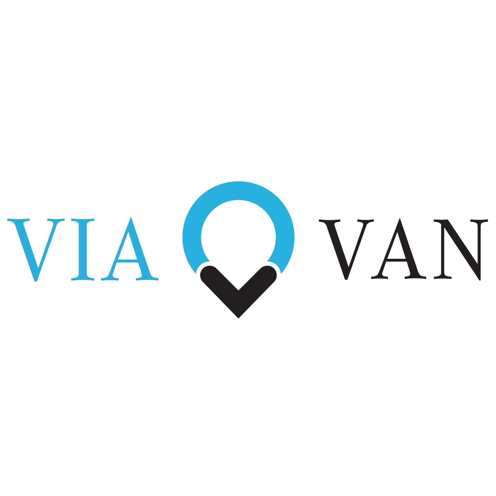

|
|
University of ChicagoI'm excited to explore the city of Chicago and start my Masters in Computer Science! Also, I'm not sure what people call it, Pizza? Pie? Lasagna? But I can't wait to try Giordano's! empty line |
King's College LondonLondon was a once in a lifetime experience. Economics was a perfect blend of academic theory and industry application. I still can't believe I spent three years in this incredible city. empty line |
|
Business DeveloperUV Robots is a pioneering startup aimed at battling the novel Coronavirus. We provide an effective option for hospitals, hotels and airports to disinfect viruses, fungi and bacteria through UltraViolet-C radiation. As a Business Developer, the scope of my role span across various divisions from conversing with manufacturers, distributors and local dealers to developing software for autonomous navigation and path planning. |
|
King's Undergraduate Research FellowAs an Undergraduate Research Fellow, I had the opportunity to work under Dr. Andrew McFaull, a lecturer in Accounting and Finance Education at King's College London. I was introduced to the realm of academia. Starting from the inception of an idea through to qualitative discussions and quantitative statistical modelling. The research undertaken will hopefully form the basis for a published journal article. |
|
Private Banking Summer AnalystAs a Private Banking Summer Analyst, I rotated around the Wealth Management and Private Equity teams. I assisted Client Relationship Managers with creating client documents and onboarding a high net worth individual from Montevideo, Uruguay. Working with the Private Equity team ranged from scrutinizing annual reports and constructing valuation models to drafting equity stories. A key takeaway was the importance of data driven conclusions when rationalising investments. |
|
|  | Operations AnalystViaVan, a ride sharing platform, provides innovative solutions for on-demand and pre-scheduled transportation mobility all across Europe. Working at ViaVan provided me with extensive exposure into the ride sharing business model. My role consisted of verifying drivers and updating existing databases in order for compliance with TFL regulations. This experience helped me understand how technology companies are able to scale their business and enhance their software capabilities through their various divisions. |